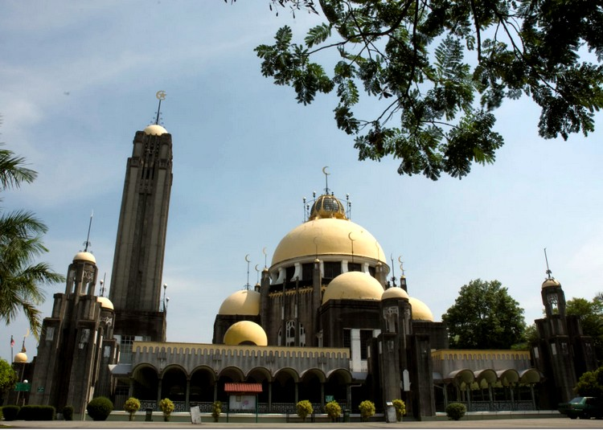

座落在巴生的蘇丹蘇萊曼皇家清真寺是伊斯蘭建築的經典作品之一，它揉合了外國殖民建築物及亞洲建築物的外觀於一身，它是英國殖民政府於19世紀時，特地為蘇丹蘇萊曼而建的。
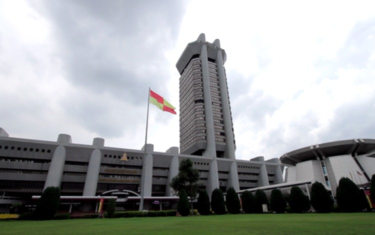
蘇丹沙拉胡丁阿都阿茲沙大廈是一座24層樓的建築物，建於一座小山丘上，並且面向整座莎阿南市區。 此大廈是以傳統的布吉斯(BUGlS)風格而建。雪蘭莪州政府的祕書處及行政相關單位皆設在此處，其建築造型獨特，周圍環境十分幽美怡人。
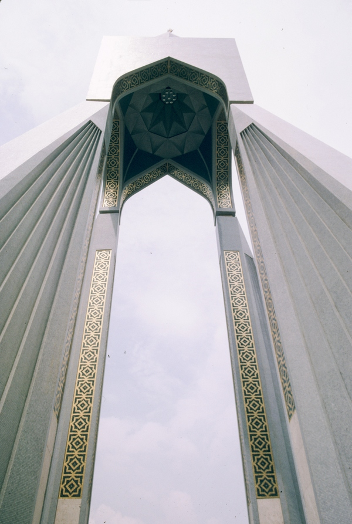
州祕書處大廈之前，是一座擁有弧形拱門，由花崗岩鍍上一層金黃色物體，並且其有反光效應的材料建築而成。此處風景如詩如畫，是攝影愛好者及旅客最喜歡到來的景點。
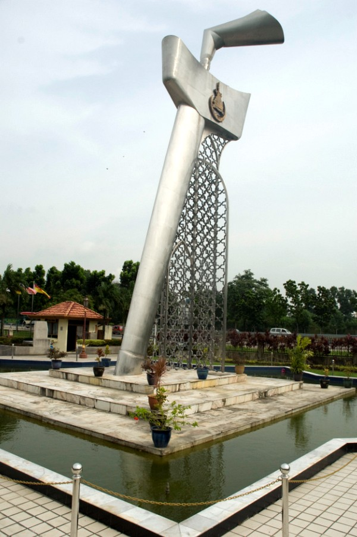
當您取道聯邦大道，從莎阿南往巴生的方向行駛，就在BUKIT RAJA工業區前，您將會發現左手邊有一座銀色超大型的馬來劍，插立在大道旁。 這座紀念碑豎立於1985年，是為了紀念雪州蘇丹登基銀禧週年紀念而建的。馬來劍(KERlS)是一把雙刀小劍，古代馬來英武士的隨身武器。
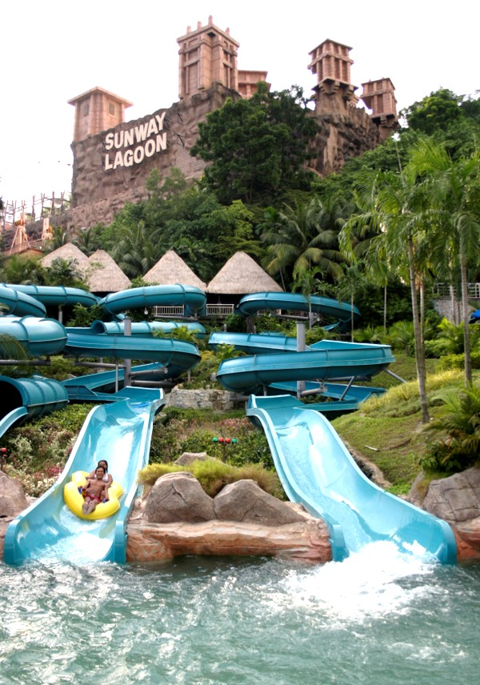 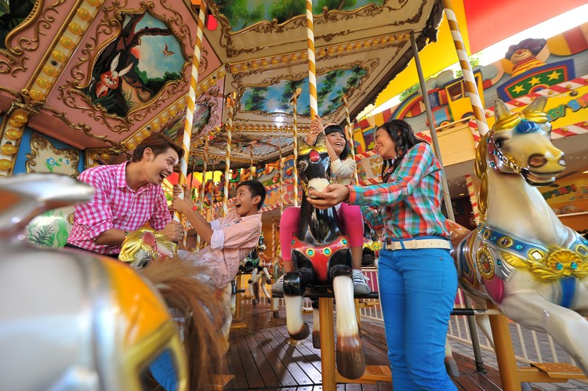 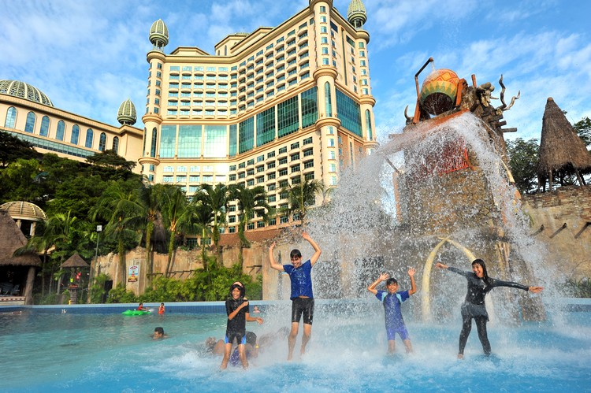 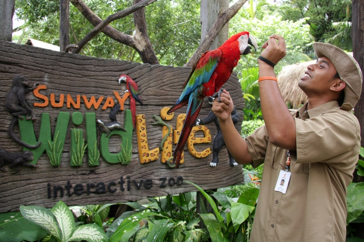
距離吉隆玻市中心及吉隆玻國際機場(KLIA)只有區區的30分鐘車程，雙威主題樂園涵蓋了六大主題玩樂區及超過90種乘騎及景點，分佈在水上樂園、挑戰機動樂園、超極限冒險樂園、野生動物樂園、驚魂樂園，以及亞洲首座尼克主題樂園：Nickelodeon Lost Lagoon裡。 擁有馬來西亞首座Waterplexx 5D及全馬最大型的水上乘騎- Vuvuzela，雙威主題樂園絕對不負“亞洲最佳景點”之名。雙威主題樂園為您提供無可比擬的樂趣及美好假期體驗。 雙威水上樂園的前身是錫礦場，如今，已被改造為一座娛樂公園。這裡提供許多富有趣味的玩樂設施，如：水上運動、雲霄飛車﹙過山車﹚、娛樂場所、餐館及許多休閒設施。 遊樂園的附近就是雙威金字塔購物中心、娛樂中心及一家飯店。

黑風洞距離吉隆坡商業中心大約13公里，這座石灰岩洞穴每逢大寶森節時，皆會吸引大批旅客到此一遊。此處舉行的大寶森節慶典非常壯觀，每年吸引成千上萬的信徒及看熱鬧者，到此大事慶祝。 黑風洞涵蓋了幾個洞穴。其洞穴主廟的天花板之高度超過100公尺，廟裡全是興都神龕。每個欲抵達此廟者，皆必須攀登擁有272梯級的陡峭階梯。大寶森節慶時，有超過10萬個信徒，一起攀登這座階梯，場面肅穆壯觀。
1.png) 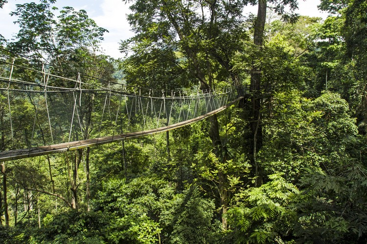
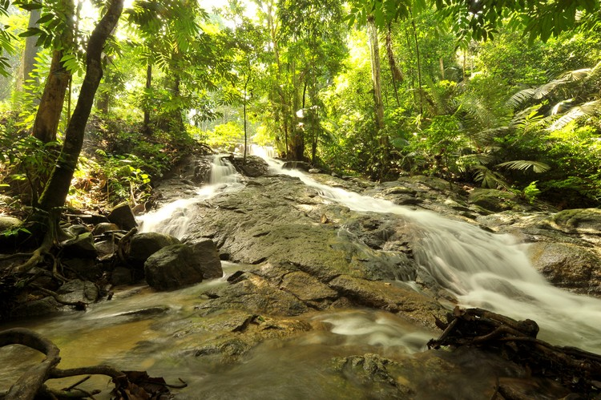
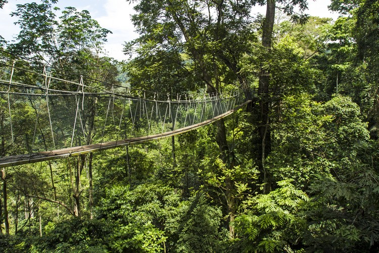
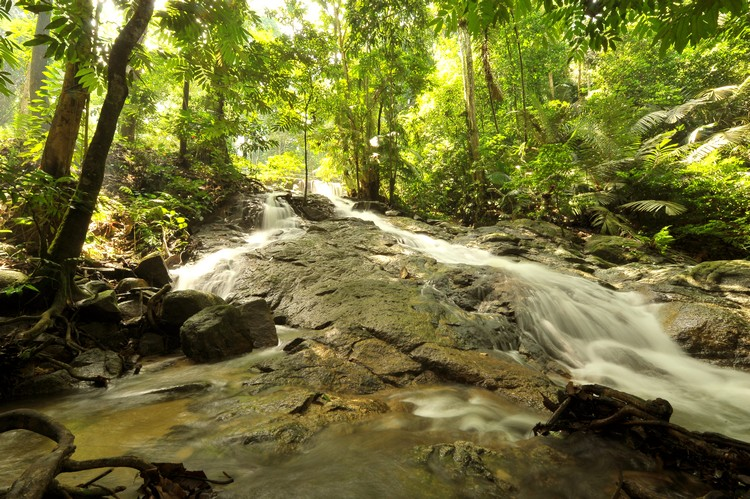
此館位於吉隆坡甲洞，距離吉隆坡市區大約15公哩。這塊園地高低起伏不平，種有許多樹木供森林研究之用。這座樹木園成立於1952年，其宗旨是收集國內各種不同品種的樹木植物，再將之種植在此園地上。 博物館的功能則是教育大眾，有關馬來西亞豐富的森林遺產，同時展示各不同樹木的品種，詳盡解釋這些樹木的用述及其製成品等。此館有提供嚮導服務，不過，旅客必須提早預約。
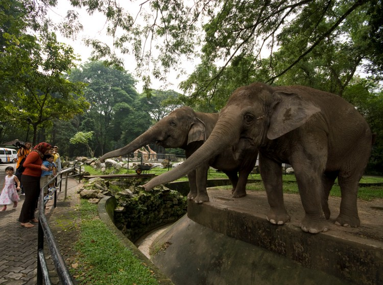 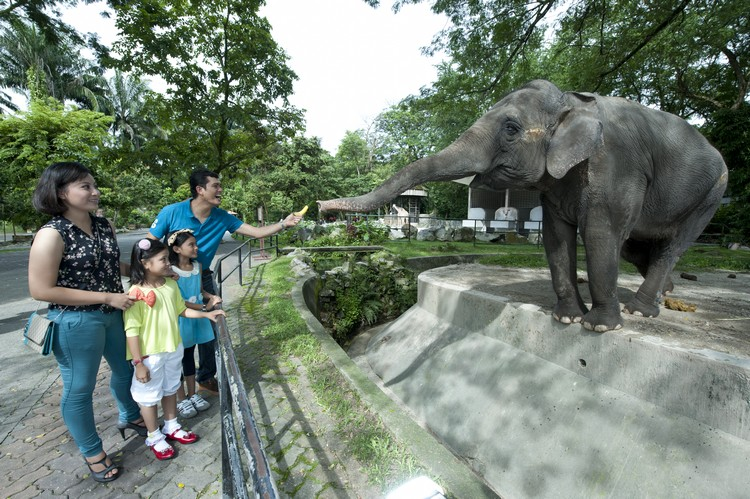 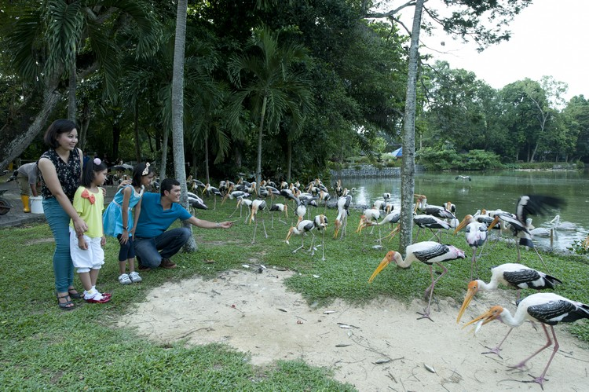
國家動物園內飼養了來自全世界的各類動物。園內還有一座水族館及一個鳥類飼養場。此外，還有餐館、露營及騎馬等設施。國家動物園距離市中心只有13公哩，這裡風景怡人又非常容易抵達。
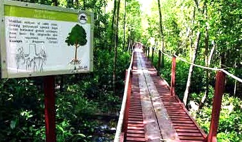
瓜拉雪蘭莪自然公園涵蓋大約800依格次級的溼地矮樹林，包括受潮水侵襲的泥濘地的及紅樹林沼澤地。 此處是世界聞名的鳥類庇護所，單是有記錄的出沒鳥類就有大約600種，其中大部份是遷移的季候鳥。包括比較少見的琵鷺鷸及青足鷸。 這座公園是由馬來西亞自然協會全權經營，此處備有觀賞鳥群的隱匿處、行人走道、瞭望臺及可供教學的木板道及渡假屋等設備。
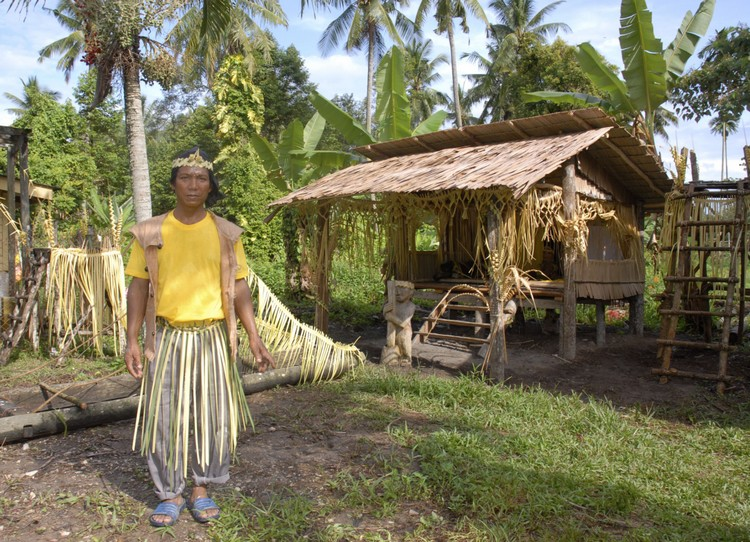 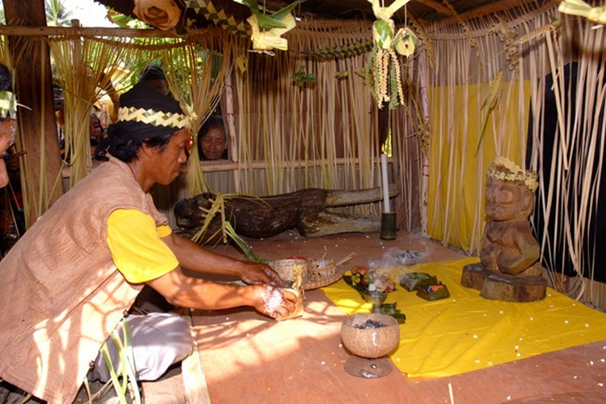 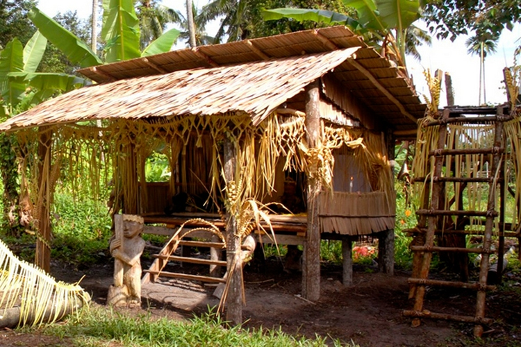 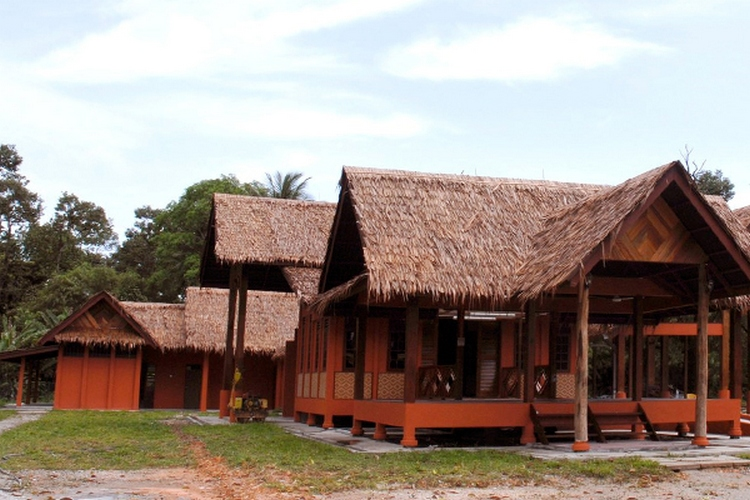 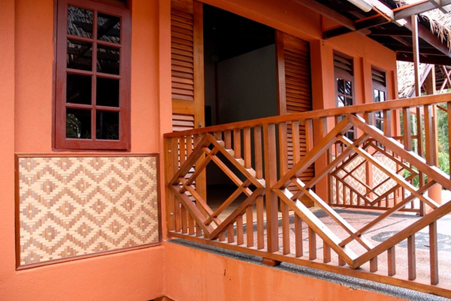 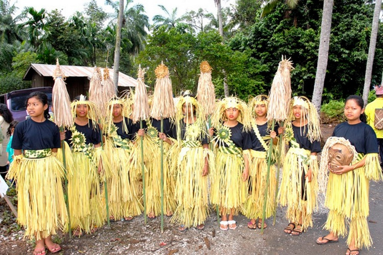
Carey Island 就在半島大陸的岸外，這裡是MAH MERI原住民社區的主要落腳處。 MAH MERI原住民社群已經融入了現代化的生活方式，他們大部份在附近的種植園及農業園地工作，不過他們還保留了其獨特的文化及生活方式。 除了可以在此看到MAH MERI族的傳統舞蹈及音樂表演外，他們另一個著名的手工藝品是以沼澤硬木雕刻而成的作品，稱為“NYIREH BATU”。
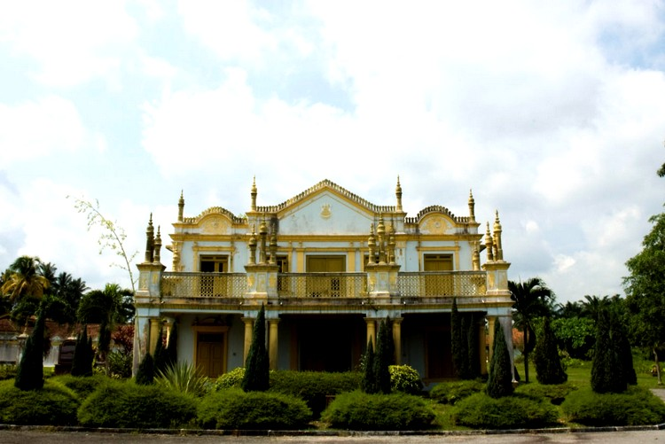
朱格拉是古代君主坐鎮的所在地，這座寧靜的小鎮擁有好些歷史性的建築物。其中之一是建於1932年的蘇丹阿拉烏丁回教堂，它具有古典摩爾式的建築風格。 此處的皇城，則以蘇丹阿拉烏丁所珍藏的舊木雕最為人稱道。皇室墓陵、Jugra 燈塔及舊皇宮之廢墟等，也值得參觀。
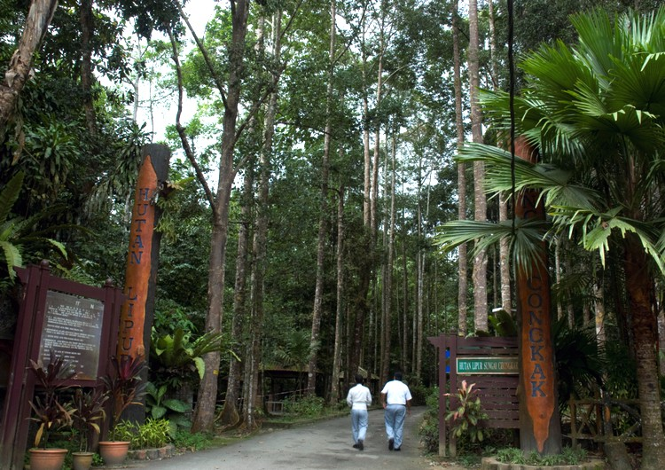 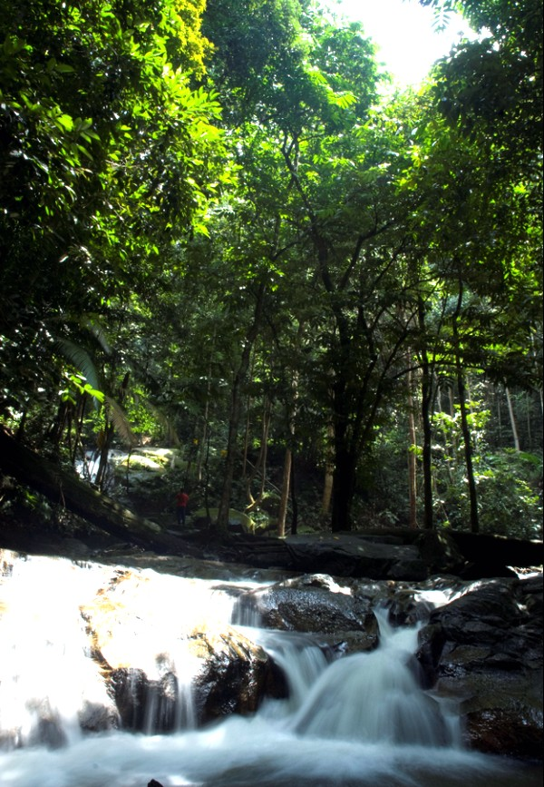
此休閒森林距離吉隆坡市區大約33公哩。靠近熱帶雨林之處，種了好多果園。這裡還有提供露營、野餐、游泳及住宿等設施。週末時候，會有這多小販到此售賣各類食物及飲料。
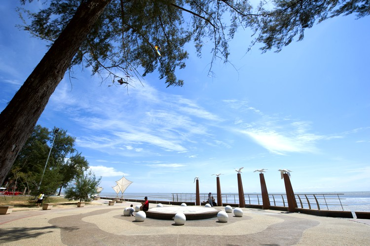 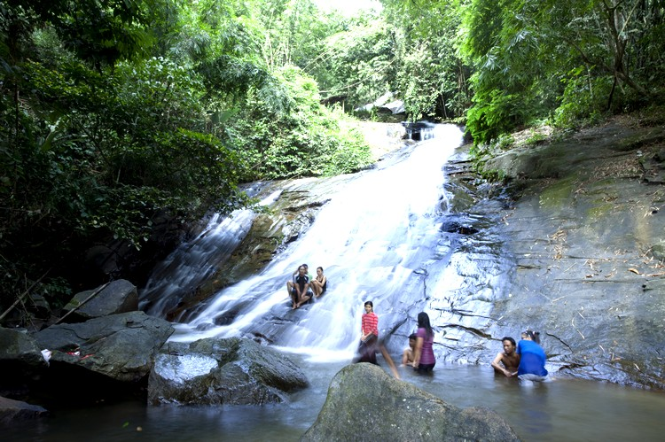 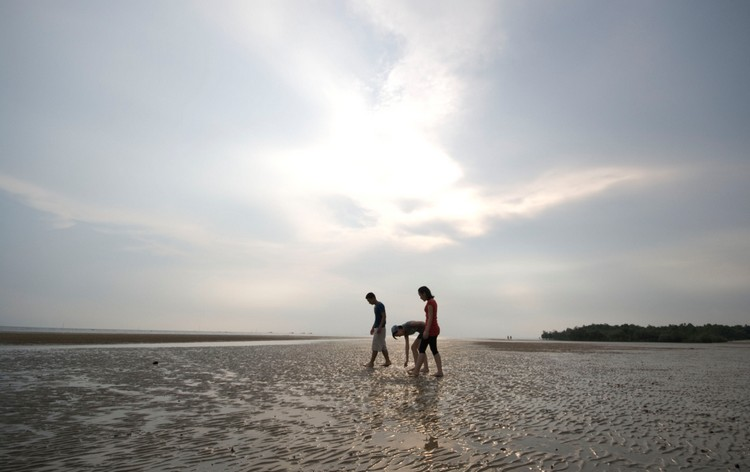
這片寧靜的海灘是第二次世界大戰時，英國及印度解放軍最先降陸西海岸的地點。這裡的海域很小，不過很適合游泳。海灘附近是高高的木麻黃樹林。
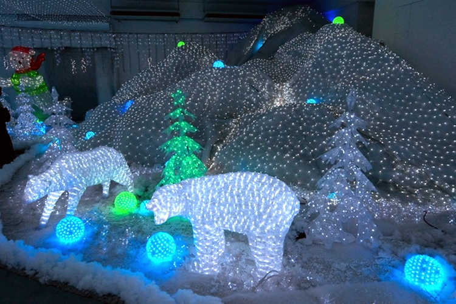 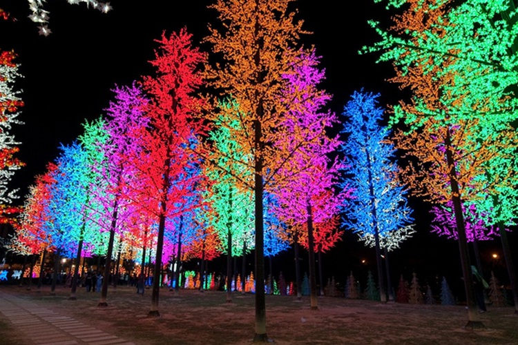 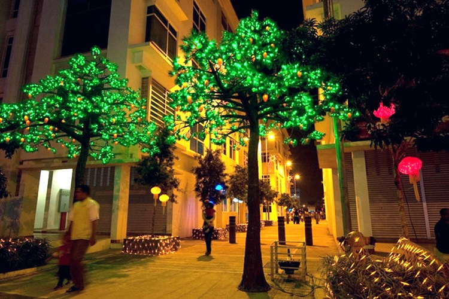 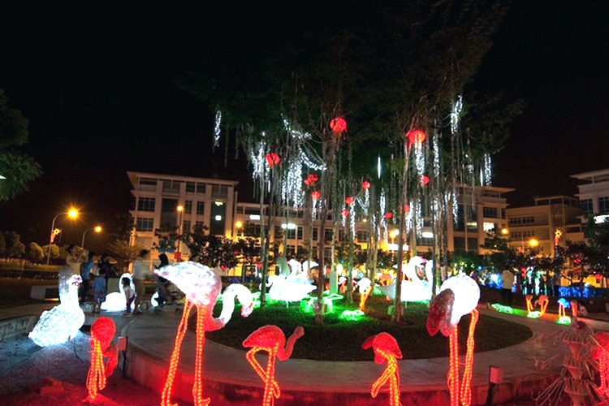
位於雪蘭莪州沙亞南市(Shah Alam) i-City 數碼燈光城 “City of Digital Lights” 是州內的最新地標。 入夜時刻，整個莎亞南數碼燈光城(City of Digital Lights) 就被LED的燈光包圍著，塑造出大型夜晚旅遊觀光點。 燈光樹發出不同的顏色燈光，照亮了漆黑的夜晚。從遠處看去，就猶如有一個發出各種光芒的森林在前方吸引著您的目光。
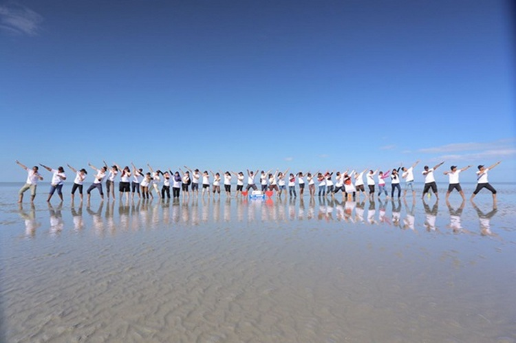 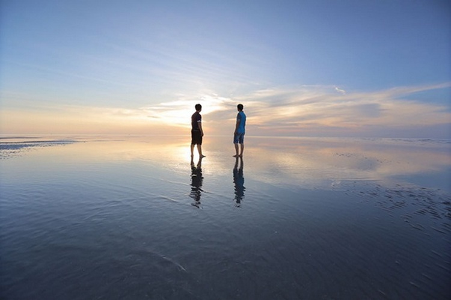
位於瓜拉雪蘭莪附近一個獨特的沙沙蘭漁村海灘(Sasaran Beach)，在每個月農曆初一及十五，海水大退潮時，就會從海中央浮現出淺沙灘。 尤如馬來西亞擁有自己的天空之鏡 “Salar de Uyuni” ；一望無際得讓人分不出天與地。因為這個特殊的“神秘島”漂亮之處，而成為旅遊勝地。 讓喜愛攝影的玩家及自拍的遊客，增添了去處。也是海洋生物的棲息地。